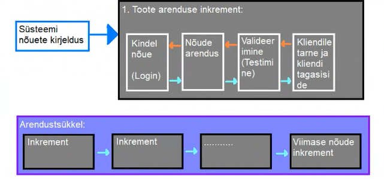

Inkrementaalne arenudsmudel on üks viis kuidas lahendada kosemudeli jäika tsüklit. See aitab arendusmeeskonnal
toime tulla muudatustega paremini. Muudatused võivad tulla kas äritegevusest, kliendi soovidest, turu olukorra
muutumisest, tehnoloogiate muutmisest, seaduste muudatustest või siis lõppkasutaja tagasisidest.
Kuna kosemudelist keset arendustööd on muudatustega toimetulek keeruline, on kosemudeli kasutamise puhul
muudatuste sisseviimine üsna kulukas, siinkohal tulebki appi Inkrementaalne arendusmudel. Mudel ise on
ajagraafikupõhine ja ei tugine, erinevalt kosemudelist, täielikult valmiskirjeldatud kavandile. selles mudelis
saab arendada erinevaid programmi osi samaaegselt või erinevatel aegadel. Inkrementaalses arendusmudelis aitab
samaaegset arendustööd teha kindlad tegevused mida kosemudelis ei ole. Nende tegevuste abil on võimalik kliendile kuvada
Programmile keskse tähtsusega osi, enne kui neid täielikult arendama hakatakse. Tehakse näiteks, kas mingisugune
kasutajaliidese prototüüp, või programmeeritakse vähese testimise läbinud MVP (Minimum Viable Product) mis omab
ainult programmi nõuetes kirjeldatud keskset funktsionaalsust. Näiteks:
Ütleme et tegemist on failikonverteriga, siis ei oma ta suurt kasutajaliidese kujundust, ega isegi kõiki formaate
mis lõpp-programm teisendama peab, vaid ainult demonstreerib seda funktsionaalsust käsurea abil, osaliselt. Teisendab
ainult kahte-kolme formaati.
Kirjeldatakse ära üldjoontes mida valminud tarkvaratoode tegema peab. Nõuded jaotatakse ka ära tähtasamateks ning
vähem tähtsamateks. Tähtsamad nõuded on tavaliselt need, mis kliendile rohkem väärtust toob. Siin määratakse ära ka
kuidas arendustöö toimima hakkab, ehk millistes inkrementides klient oma toodet saama hakkab - ehk kui pika aja tagant
Iga inkrement peab tarnima kliendile mingisuguse toote funktsioneeriva osakese.
Kui nõuded on olemas, ning ära jaotatud prioriteedi järgi hakatakse toodet tarnima peale nüüd teostatavat arendusprotsessi.
Siin arendataksegi välja vastavalt nõuetele programmiosa. Iga inkrement saab arendada kasutades erinevaid eksisteerivaid
arendusmudeleid. Näiteks:
On olemas nõuetes programmiosa mille arendus ei vaja dünaamilist nõuetele vastavuse jälgimist nagu faili sisse lugemine
Või faili kirjutamine - seda programmiosa saab arendada näiteks Kosemudeli abil. See milline
arendusmudel kõige paremini sobib on arendusmeeskonna enda otsustada vastavalt sellele milline nõutud programmiosa parasjagu
arenduses on.
Kui arendatatava programmiosa nõuded on külmutatud (ehk hetkel, arendustöö ajal, on nende muutmine võimatu), siis muude
arendusse tulevikus minevate osade nõudeid on võimalik veel muuta. Kui on vaja ka juba arendatud ning kliendile ülesantud
inkremendi nõudeid muuta, siis seda saab ka teha, kuid olemasolev inkrement mille nõudeid muudeti, läheb tagasi arendatavate
tööde nimekirja, pärast nende nõuete muutmist. Ehk kõik nõudeid mis ei kuulu parasjagu arendatava programmiosa juurde on
lahtised.
Nõuetele vastava programmiosa valmimisel tarnitakse programmiosa - ehk inkrement - kliendile. Klient saab siis selle
koheselt kasutusse võtta - või omapoolselt läbi testida - ja täpsustada edasisi projektis olevaid nõudeid ning anda tagasisidet
juba valminud programmiosade kohta. Selle tagasiside põhjal võidakse tuletada ka juba valminud osadele uus nõudeid. Klient saab
ka valminud osa koheselt integreerida muu olemasoleva keskkonna või eelnevalt arendatud toote süsteemidega.

| Head küljed | Halvad küljed |
|---|---|
| Klient saab valminud tooteosa katsetada/kasutada ilma et kogu projekt valmis oleks | Progressi jälgimine on keerukas - Arendustöö progressi ei jälgita enam arendatud nõuete järgi vaid arenduskiirjus põhiselt - kui palju igas ajavahemikus arendada on võimalik. |
| Iga inkrement on arendatav erineva arendus mudel abil | Projekti struktuur degredeerub iga uue muudatusega, kuna nõuded on muutuvad, ning struktuur ei pruugi muudatuste arvule või muudatuste vajadustele vastu pidada - tekib spagett. |
| Kulutused on väiksemad - kuna kasutaja nõuded on muutuvad, aga muudatusi saab sisse viia arendusttsükli käigus on muudatuste sisseviimise kulutused väiksemad, kui neid teha pärast esmast arendustsükli lõpuleviimist | Koodi korrashoiu mitteteostamine tõstab hiljem paranduste ja muudatuste sisseviimise kulusid |
Kuna inkrementaalne arendus ja iteratiivne arendus on lihtsalt sarnased sõnad, kipuvad nad inimestel sassi minema,
aga nad siiski tähendavad eri asju: